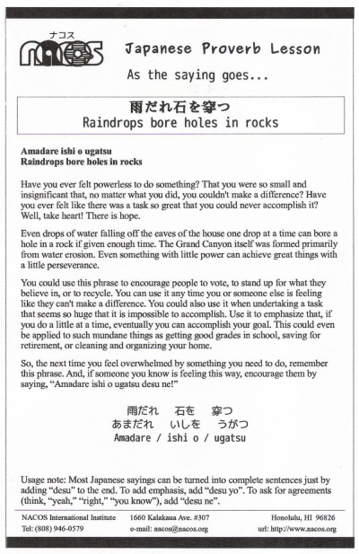

Amadare ishi o ugatsu
Raindrops bore holes in rocks
Have you ever felt powerless to do something? That you were so small and insignificant that, no matter what you did, you couldn't make a difference? Have you ever felt like there was a task so great that you could never accomplish it? Well, take heart! There is hope.
Even drops of water falling off the eaves of the house one drop at a time can bore a hole in a rock if given enough time. The Grand Canyon itself was formed primarily from water erosion. Even something with little power can achieve great things with a little perseverance.
You could use this phrase to encourage people to vote, to stand up for what they believe in, or to recycle. You can use it any time you or someone else is feeling like they can't make a difference. You could also use it when undertaking a task that seems so huge that it is impossible to accomplish. Use it to emphasize that, if you do a little at a time, eventually you can accomplish your goal. This could even be applied to such mundane things as getting good grades in school, saving for retirement, or cleaning and organizing your home.
So, the next time you feel overwhelmed by something you need to do, remember this phrase. And, if someone you know is feeling this way, encourage them by saying, “Amadare ishi o ugatsu desu ne!”
Usage note: Most Japanese sayings can be turned into complete sentences just by adding “desu” to the end. To add emphasis, add “desu yo”. To ask for agreements (think, “yeah,” “right,” “you know”), add “desu ne”.

| © 1995-2013 NACOS International Institute. All Rights Reserved. |